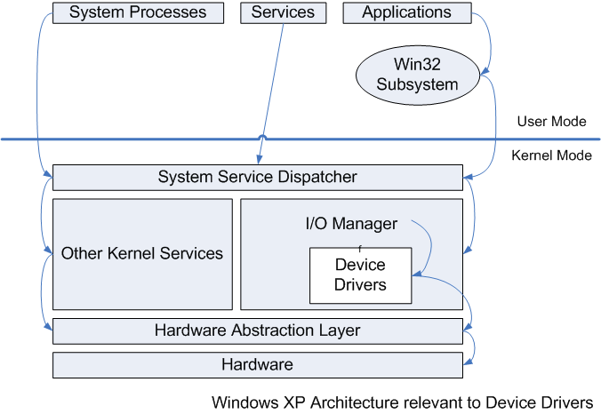

To begin understanding and creating device drivers, one must first understand the architecture under which these device drivers will execute. The following diagram is a simplified overall view of the Windows XP Architecture relevant to Driver Development. It is very important to remember that many other Executive (read: XP Kernel) services are not shown in this diagram, but still may affect drivers.
Using the Win32 API (User Mode API), Applications make calls to the Win32 Subsystem, which is a composed of a linked library that 'traps' into kernel mode. Next, the user mode API call is mapped into a System Service Dispatcher function call; in the case of most device drivers, this means that the dispatcher calls an I/O Manager function. The I/O Manager creates and allocates space for a new I/O Request Packet (IRP) structure instance. This IRP is passed to the relevant device drivers; these drivers then use the hardware abstraction layer (HAL) calls to read bytes directly from the hardware.
Affectionately known as the HAL, this is a collection of subroutines that varies for different hardware configurations. Collectively, these routines present the same hardware access interface to the kernel and device drivers, effectively isolating the OS from platform-specific hardware differences.
The system service dispatcher is in charge of handling interrupts, exceptions, and system service calls. Depending on the HAL, most platforms contain an instruction that causes a 'trap' that initiates a transition into Kernel mode. On Intel x86 Pentium II and later, this instruction is called 'sysenter,' and there two registers EAX (system call #) and EBX (pointer to parameter list) reserved for trapping into kernel mode. In order to actually handle these calls, the system also stores (at boot) a function pointer to the dispatcher in a special register reserved for system calls. ( more on interrupts and windows scheduling related to drivers )
The Windows XP I/O System is intended to manage hardware devices and provide access to them from Applications and the system itself. This system is packet driven: at its core are the I/O Request Packet (IRP) and the I/O Manager. To complete I/O requests, these IRPs are passed around between different components of the I/O system until the request is complete (the rest of this guide will elaborate of much of the I/O system ).
Windows supports a wide variety of device-types and programming environments. Drivers fall into two major categories: User-Mode and Kernel-Mode. Printer drivers and virtual device drivers are two main types of user-mode drivers. This guide focuses on the other, probably larger, category of kernel-contained drivers. This second type is dynamically linked into the OS kernel itself. Kernel mode drivers are of many types, including but not limited to file system drivers, network device drivers, video adapater drivers, input device drivers, and "protocol" drivers. ( more on the device driver architecture )
The Windows Kernel provides many other services to user-mode program programs as well as processes that promote the overall "health" of the system. These "services" include such things as File System caches, Object Manager, Security Reference Monitor, Virtual Memory, Process & Thread Management and Scheduling, Configuration Manager (the Registry), Local Procedure Call facilty, and more.
The Windows Kernel also has a ridiculously large number of supporting functions that also provide things such as Unicode string handling and synchronization objects. It may be appropriate here to note that non-plug and plug drivers in the above section may also provide extra kernel functionality in the form of services like the implementation of network protocols.